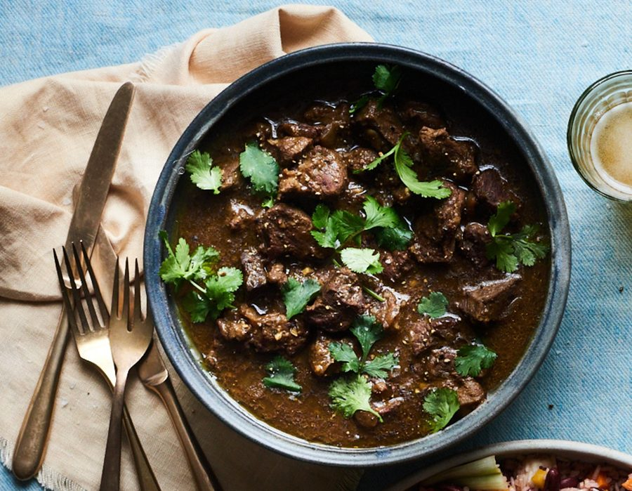

Curry goat

Put the goat in a large bowl, add the garlic, lime juice, cumin and curry powder, cover and marinate for 24 hours. If you want a bit of extra heat, finely chop the scotch bonnet and add that, too; otherwise, leave it whole and add it later, when the stock goes in.
When you’re ready to cook the curry, put the oil in a large casserole or similar set over a medium heat, then soften the onion, stirring often, for about 10 minutes. Add the marinated goat and cook, stirring, for about 15 minutes, to brown the meat all over and intensify the flavours. (Depending on the age of the goat, it may at this stage give off some liquid.)
Pour the stock over the meat, season to taste, then bring to a boil. Turn the heat down low, cover the pan and leave to simmer for about two hours, until the meat is soft and tender; if at any stage the sauce looks like drying out, top up with water as required. Serve hot with rice and peas.